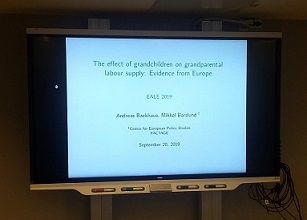
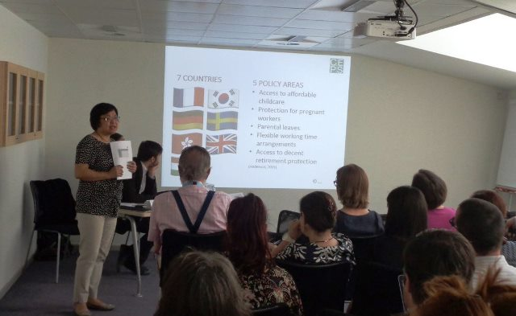
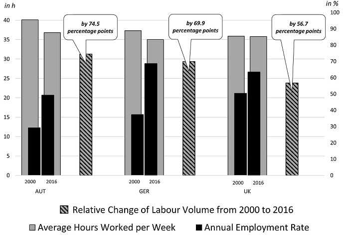
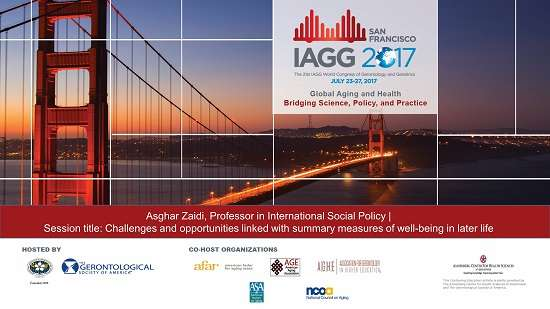

News
News related to FACTAGE's research programme
Posted: 26 February, 2020
Policies for an Ageing Workforce: Work-life balance, working conditions and equal opportunities
Extending average working lives by 10 years, while ensuring an adequate social safety net for those unable to work into their late 60s and 70s, is a major social policy challenge today and for the coming decades. Tackling this challenge involves delving into policy areas that range from working conditions, skills and lifelong learning, pensions, socio-economic inequalities in health and life expectancy to the design of a much broader agenda on active ageing.
This edited volume covers these issues in succinct chapters based on in-depth research by the authors.
Despite the challenges of demographic ageing, as Commissioner Thyssen says in her Foreword to this book:
“… ageing does not just pose challenges. If Member States promote the right active ageing approach, this also offers opportunities. Firstly, active ageing means more social opportunities. Older people contribute to society too. We should empower them to work, learn and volunteer, according to individual needs, preferences and capacities. Secondly, active ageing means economic opportunities. Older people represent a growing market. Servicing this market will lead to business opportunities and innovations in which Europe could be a leader. And the experience and expertise of older people is an indispensable asset for our economies – an asset that increases further when they can properly pass the torch by mentoring younger generations.”
Edited by: Mikkel Barslund
Contributing authors: Robert Anderson, Mikkel Barslund, Markus Bönisch, Andreas Cebulla, Hans Dubois, Charlotte Fechter, Tobias Göllner, Nathan Hudson-Sharp , Johannes Klotz, Gerd Naegele, Jakob Peterbauer, Werner Sesselmeier, Jacob Gareth Stauning Prewett, Eduard Stöger, Lucy Stokes, Gilles Thirion, Oscar Vargas, Alan Walker, David Wilkinson.
This book was produced under the FACTAGE project.
Posted: 25 October, 2019
FACTAGE results presented at UCLouvain
FACTAGE researcher Andreas Backhaus presented the paper “The Effect of Grandchildren on Grandparental Labour Supply: Evidence from Europe” at UCLouvain on 22 October 2019.
Posted: 30 September, 2019
FACTAGE results presented at the European Association of Labour Economists

FACTAGE researcher Andreas Backhaus has presented his joint work with FACTAGE coordinator Mikkel Barslund at the 31st Conference of the European Association of Labour Economists (EALE), which took place September 19-21 at Uppsala University. The paper “The Effect of Grandchildren on Grandparental Labour Supply: Evidence from Europe” was presented in the Session on Retirement and Care.
Posted: 12 August, 2019
Propensities to work at an old age: Acknowledging differences in Active Ageing?

As part of the FACTAGE project Charlotte Fechter, University Koblenz-Landau, has done a Ph.D. dissertation in Labour Economics on "Propensities to work at an old age: Acknowledging differences in Active Ageing?" It is about the impact of the policy to extend working lifes, which aims to increase labour participation among older individuals. To answer the question how older workers have adapted their exit patterns in the context of changing retirement institutions in Germany, four single studies were conducted. By studying employment among older individuals, heterogeneous changes in the patterns of late careers were revealed.
Posted: 01 August, 2019
Estimating Differential Mortality from EU-SILC Longitudinal Data Additional Technical Information

Johannes Klotz and Tobias Göllner have authored the final in a series of three reports produced in FACTAGE Work Package 4 (report 1, report 2). It contains the additional technical details on estimating differential mortality from EU-SILC longitudinal data, together with some discussion points on future research. To get the most out of this report we strongly encourage reading the first two reports, since it is based on those and refers to them heavily.
From the abstract:
This is the last report in a series of three reports dealing with estimation of differential mortality from EU-SILC longitudinal data. Here we provide additional technical information on the subjects that were not yet solved in the first report (Klotz and Göllner 2017). We strongly encourage reading the first two reports to get the most out of this third report.
The report covers three chapters: First we check validity of mortality information from EU-SILC data by benchmarking and validation of mortality rates broken down by age, sex, calendar year, country and highest educational level completed. Then we give an outlook on open topics for future research, such as weighting of observations and transformation from hazard ratios to life expectancy gaps, for which some preliminary findings are available. Finally, since the UDB longitudinal data received an overhaul since publication of our first report we present an improved software code, this time implemented in R and not in SAS. This change in statistical software - hopefully - broadens the potential user base, seeing that R is open source and free of charge. We highlight the changes in data structure and how this affects our methodology.
Posted: 01 August, 2019
FACTAGE-CEPS event: Ageing, health and well-being

On 25 June, CEPS hosted the FACTAGE conference Ageing, health and well-being.
There is a broad consensus that a key response to demographic ageing is to extend the length of working lives. There is much less agreement on the central questions of how and for whom to extend the number of years in employment. This conference looks at three important inter-related issues regarding demographic ageing: life course perspective on inequalities and well-being, the importance of good health and pension policy design. Good health is a pre-condition for a long working life, and inequalities in health towards the end of the labour market career may influence pension policy design. Understanding the extent to which inequalities are compounding over the life course with respect to labour market participation and health is important for prevention strategies; and to the effectiveness and design of pension reforms. Anyone working on issues related to ageing, pension, health and well-being is encouraged to join us and contribute to the discussion with the presenters during Q&A sessions and breaks.
Programme:
| 09.30am–10.00am | Registration and coffee | |
| 10.00am–10.05am | Welcome and introduction to FACTAGE | Mikkel Barslund, CEPS |
| 10.05am–11.00am | Session 1: The life course 1: Compounding inequalities | Chair: Mikkel Barslund, CEPS |
| Education and Training in the UK: Inequalities over the life course | David Wilkinson, NIESR & University College London | |
| Compounding inequalities over the life course – evidence from OECD’s Preventing Ageing Unequally report | Christian Geppert, OECD | |
| 11.00am–11.30am | Coffee break | |
| 11.30am–13.00pm | Session 2: Ageing, employment careers and pension | Chair: Lucy Stokes, NIESR |
| Implications of Changing Employment Patterns for Pension Outcomes in Germany | Charlotte Fechter, University of Koblenz-Landau | |
| Extending Working Lives of Older Workers Experiencing Chronic Health Conditions | Anushiya Vanajan, NIDI | |
| Women and the ageing workforce: implications for occupational safety and health | Sarah Copsey, European Agency for Safety and Health at Work | |
| 1.00pm–2.00pm | Lunch break | |
| 2.00pm–3.15pm | Session 3: The life course 2: Work, pension and well-being | Chair: Werner Sesselmeier, University of Koblenz-Landau |
| Linking pension ages to occupational life expectancies | Wouter De Tavernier, KU Leuven | |
| The effect of grandchildren on grandparental labour supply: Evidence from Europe | Andreas Backhaus, CEPS | |
| Old-age trajectories of life satisfaction. Do parenthood and partnership have a protective effect? | Malgorzata Mikucka, UCLouvain and University of Mannheim |
Posted: 15 May, 2019
Joint FACTAGE / Society for Social Progress / Deutsche Rentenversicherung Bund conference in Berlin: Socio-Economic Dimensions in Extended Working Lives

On 25 April the Deutsche Rentenversicherung Bund hosted a FACTAGE conference in cooperation with the German Society for Social Progress titled "Socio-Economic Dimensions in Extended Working Lives". The conference featured presentations from project partners and other prominent academics working in the area Pensions and Longer working lives.
A special issue of the German Review of Social Policy with articles from the conference has just been published.
From the conference website:
Active ageing is attributed to a steady extension of working careers since the mid-1990s, and due mainly to the closing of pathways to early retirement. This year’s conference is a cooperation with the FACTAGE project (Fairer Active Ageing for Europe), the Society for Social Progress, the German Pension Insurance and the Research Institute of the German Pension Insurance (Forschungsnetzwerk Alterssicherung) and discusses manifold efforts of policymakers in Europe.The conference presents among others parts of the FACTAGE project, which is exploring the emerging inequalities associated with longer working lives. The concept of well-being in later life is reflected in multi-ple dimensions, including labour market integration, pension incomes, and health. Along with the expan-sion of working lives, those dimensions are expected to be influenced and change around socio-economic groups. In addition, the conference pre-sents important results on the transition from working life to retirement from projects of the Research Insti-tute of the German Pension Insurance. Therefore, the conference focuses on effects from longer working lives and discusses the role of institu-tional arrangements, experiences of ageing and well-being across social groups, changes in the classical model of family and care obligations. By providing an interdisciplinary and international insight on the impact of Active Ageing, opportunities and chal-lenges for future old age policies will be discussed.
Programme:
| 10.00am–10.15am | Welcome address | Gundula Roßbach |
| 10.15am–10.55am | Longer working and demographic change: Implications and open questions | Martin Brussig |
| 10.55am–11.35am | Work-life balance in older age: links to domestic divisions of labour and happiness | Lucy Stokes |
| 11.35am–12.15pm | Skills mismatch, earnings and job satisfaction among older workers | Jakob Peterbauer |
| 1.00pm–1.40pm | Grandparental childcare and parent’s labour supply: Evidence from Europe | Mikkel Barslund |
| 1.40pm-2.20pm | Labor market effects of early retirement reforms | Rebecca Schrader |
| 2.50pm –3.30pm | New modes, new risks? The influence of extended working lives on the late employment phase in Germany | Charlotte Fechter |
| 3.30pm –4.10pm | Labor market and distributional effects of an increase in the retirement age | Anna Hammerschmid |
| 4.10pm –4.30pm | Closing comments | Werner Sesselmeier |
Posted: 1 March, 2019
FACTAGE results presented at Institute for Employment Research (IAB) on the 17th and 18th January 2018 in Nuermberg

On the 17th and 18th of January, the IAB Graduate School’s 11th
interdisciplinary Ph.D. workshop “Perspectives on (Un-) Employment” took
place, aiming to bring together young researchers from different
disciplines. This international workshop provides an opportunity for
Ph.D. students to present and discuss their research in a constructive
atmosphere, incorporating feedback and advice from a number of
experienced researchers. Keynote speakers were Professor Daniel S.
Hamermesh (Barnard College and IZA) and Professor Marita Jacob
(University of Cologne). The annual workshop focused on labour market
research, while theoretical and empirical contributions from both the
micro- and macro-perspective were presented.
The presentation by Charlotte Fechter (University Koblenz-Landau) and Andreas Weiland (MZES, University of Mannheim) regarded implications of changing patterns of employment careers for pension outcomes in Germany by applying life course theory and conducting sequence analysis. Preliminary findings show structural disadvantages in pension outcomes which require further research.
Posted: 3 October, 2018
FACTAGE conference @NIESR in London: Gender Inequalities in Extending Working Lives
On 26 September NIESR hosted a FACTAGE conference titled "Gender Inequalities in Extending Working Lives". The conference featured presentations from project partners, other academics as well as from the UK Department for Work and Pensions.
From the conference website:
Considerable efforts have been made by policymakers to encourage individuals to extend their working lives, both in the UK and across Europe. While remaining in work for longer can bring benefits for individuals as well as for society more broadly, there is increasing recognition that impacts may differ for different groups. The Fairer Active Ageing for Europe (FACTAGE) project is exploring the emerging inequalities associated with longer working lives. This one-day workshop will focus particularly on issues relating to gender inequalities associated with the extension of working lives, including emerging findings from the FACTAGE project, along with presentations from invited speakers.
Posted: 8 December, 2018

FACTAGE results on health inequalities among older workers presented at 11th European Public Health conference in Ljubljana
At the 11th European Public Health Conference in Ljubljana, Mikkel Barslund presented preliminary results from FACTAGE work on socio-economic health inequalities. The presentation "Recent trends in health inequalities among old-age groups across Europe" was given in the workshop "Do European policies to work longer contribute to health inequalities?".
Members of some of the sister JPI More Years Better Lives projects also gave talks at the workshop.
The full programme can be found here.
Posted: 26 September, 2018

FACTAGE methodology: new preliminary R code presented at uROS 2018
Tobias Göllner presented the preliminary R code equivalent of the SAS code at the uROS 2018
Tobias Göllner (Statistics Austria) presented preliminary R code which is a translation of the SAS code at the uROS 2018 conference 12 – 14 September 2018. The 6th Conference on the Use of R in Official Statistics took place in The Hague at the Dutch Office for National Statistics (CBS). A raw pipeline in R was presented to the audience which recreates the results of the published SAS code. Valuable input was gathered on how to improve and change the code in order to achieve faster results and make it easier to use. The aim of the R translation is to broaden the potential audience of users of our methodology.
You can view the preliminary R code at github and actively help us to improve and maintain it. This is still a work in progress and not yet finished. Also be on the lookout for an update of our SAS code during nest year.
Tobias' presentation can be downloaded here as well as all other presentations. The full programme can be found here.
Posted: 7 September, 2018
FACTAGE results presentated at the 16th annual conference of the ESPAnet.

On 30th August to 1st September Charlotte Fechter attended the 16th annual conference of the ESPAnet Europe. Charlotte presented her work on "The Influence of Extended Working Lives on the late employment phase of the elderly in Germany" in the stream "Reforming pension systems - emplpyoyment, retirement and well-being in later life" with the convenors: Katja Möhring, Susan Kuivalainen and Kati Kuitto.
"The 16th annual conference of the ESPAnet aims to discuss the challenges, problems and future prospects of European welfare systems at a time of great political, economic and environmental uncertainties in the globalized world. New challenges such as terrorism, the refugee crisis and global warming have put additional pressures on the systems of social protection across Europe and worldwide. In the wake of all these transformations, fundamental questions still persist: Are European welfare systems resilient enough to deal with these new challenges? What does the future hold for European welfare systems?"
Posted: 16 August, 2018
FACTAGE results presentated at the UK Work, Pensions and Labour Economics Study Group (WPEG) Annual conference.

On 30th July David Wilkinson presented the findings from the study "Skill mismatch among older workers and workplace performance in Britain" at the Work, Pensions and Labour Economics Study Group (WPEG) Annual conference. The Labour Economics Study Group was founded in the late 1960s. The aim of the group is to foster a high standard of dialogue between academics and civil servants with an interest in labour economics, pensions and related fields.
The research shows that older workers were slightly more likely to report that their own skills were higher than required to do their job, and slightly less likely to report that their own skills were lower than required to do their job than younger workers. Overall, mismatched workers reported lower levels of job satisfaction than workers who reported that their skills were about the same as required to do their jobs, but the association between job satisfaction and skill mismatch was limited to younger workers (aged less than 40). For workplaces, having a higher percentage of mismatched workers does not have a significant impact on workplace performance measures, measured in terms of financial performance, labour productivity and the quality of service or product. However, workplaces with more mismatched workers who also employ a lot of older workers often demonstrate higher performance, particularly for workers whose skills were higher than needed to do their jobs. Employing older workers with higher skills than needed may be good for firms in terms of performance, without the skill mismatch affecting the job satisfaction of these workers.
Posted: 5 July, 2018
Lunch Seminar: Work-life Balance for Older Women Workers

Together with AGE Platform Europe, CEPS organised a FACTAGE seminar on ‘Work-life Balance, De-familisation and Adult Worker Models: challenges faced by older workers. The seminar discussed issues concerning the double expectations on older women workers as an active contributor to the labour market and a primary carer for family members at home.
Philippe Seider, AGE Policy Officer, examined the impact of gender inequalities on women’s pension entitlements and poverty risk at older age. He stressed the importance of work-life balance policies for older women workers. He referred to the Work-life balance directive proposed by the European Commission which included a 5-day paid leave for informal carers and provided an update on the negotiation of this proposal.
Ruby Chau, a visiting scholar at CEPS and Marie Curie Research Fellow at the University of Sheffield reported on her EU funded research on work-family reconciliation policies in Europe and East Asia. She pointed out the lack of work-family reconciliation policies for older women under the EU policy framework of social investment. By introducing the concept of defamilisation which refer to people’s capacity of leading an independent life outside family relationships, she highlighted the pre-conditions for defamilisation for older women and made suggestions on how policies could respond to the gaps in such pre-conditions.
Download the presentations below.
Posted: 12 June, 2018
FACTAGE Training on Differential Mortality Estimation from EU-SILC Longitudinal Data

On 25 and 26 April 2018, the FACTAGE training on differential mortality estimation from EU-SILC longitudinal data took place at Statistics Austria (Vienna). 15 international participants from 12 different countries attended, representing national statistical institutes, the European Commission, and universities.
In the FACTAGE project, a new methodology has been developed to estimate mortality differences between socio-economic groups in a comparable European fashion based on harmonized survey sample data. The training included sessions on state of research, the data base, methodology, SAS code, and hands-on-exercises in the computer lab (SAS, SPSS, R).
If you are interested in using the FACTAGE method on differential mortality estimation, then you can find the research report and the SAS code documentation below. You may also get in contact with the Austrian FACTAGE team member Johannes Klotz and Tobias Göllner for further information.
See also the FACTAGE publication Estimating Differential Mortality from EU-SILC Longitudinal Data - A Feasibility Study
Posted: 23 May, 2018
Editing EU-SILC UDB Longitudinal Data for Differential Mortality Analyses - SAS code and documentation

In Editing EU-SILC UDB Longitudinal Data for Differential Mortality Analyses - SAS code and documentation, Tobias Göllner and Johannes Klotz from Statistics Austria provide SAS code for extracting data from the EU-SILC User Database (UDB) longitudinal files for differential mortality analysis.
From the abstract:
This SAS code extracts data from EU-SILC User Database (UDB) longitudinal files and edits it such that a file is produced that can be further used for differential mortality analyses. Information from the original D, R, H and P files is merged per person and possibly pooled
over several longitudinal data releases. Vital status information is extracted from target
variables DB110 and RB110, and time at risk between the first interview and either death or
censoring is estimated based on quarterly date information.
Apart from path specifications, the SAS code consists of several SAS macros. Two of them require parameter specification from the user. The other ones are just executed. The code was written in Base SAS, Version 9.4.
By default, the output file contains several variables which are necessary for differential mortality analyses, such as sex, age, country, year of first interview, and vital status information. In addition, the user may specify the analytical variables by which mortality risk should be compared later, for example educational level or occupational class. These analytical variables may be measured either at the first interview (the baseline) or at the last interview of a respondent. The output file is available in SAS format and by default also in csv format.
See also the FACTAGE publication Estimating Differential Mortality from EU-SILC Longitudinal Data - A Feasibility Study
Posted: 17 May, 2018
Skills mismatch, earnings and job satisfaction among older workers

Markus Bönisch, Jakob Peterbauer and Eduard Stöger from Statistics Austria have contributed a new FACTAGE publication,Skills mismatch, earnings and job satisfaction among older workers.
From the abstract:
Skills are viewed as a major ingredient of knowledge‐based economies. Individual level skills can support labor market success and can influence earnings and job satisfaction. But skills must be used in an efficient way to generate these positive labour market outcomes.
In this paper we analyze differences in skills and skills mismatch between younger (25‐49) and older workers (50‐65). The focus of our empirical research is on the analysis of the PIAAC dataset for five countries ‐ Austria, Germany, Spain, Belgium (Flanders) and the UK (England and Northern Ireland). We find that older workers have in general lower skills than younger workers but overutilize their skills more. So the potential risk to lose their skills would be higher for younger workers with less (skill) demanding jobs. The relationship between age and skill utilization is still significant in all countries except England and Northern Ireland when controlling for many other variables in amultiple regression analysis.
Our analysis shows similar effects of skill mismatch on income as in prior studies. Skill overutilizationleads in general to a wage premium compared to well matched workers. Skill underutilization resultsin a wage penalty.
We observe that in some countries skills are more overutilized than in others, and that some countries underutilize a large pool of skills. These national differences can be partly explained by different national skill formation systems and different institutional settings, though the influence of these national differences on skills, skill mismatch and their relationship to labor market outcomes is at this point not clear.
Posted: 12 March, 2018
Review of socio-economic inequalities in life expectancy and health expectancy in Europe
Isabel Mosquera, Yolanda González-Rábago, Unai Martín and Amaia Bacigalupe from the University of the Basque Country UPV/EHU have contributed a new FACTAGE publication, Review of socio-economic inequalities in life expectancy and health expectancy in Europe.
From the abstract:
Europe is experiencing demographic ageing which is already producing important changes in public policies, especially in the design of the pension system. Based on the increase of life expectancy (LE), many European governments have modified their pension policies focusing on the retirement age, delaying it around 2 or 3 years in most of the countries. However, as some important studies have stated, the general rise in LE among the elderly population is not uniformly distributed. Great inequalities in LE are found according to the socioeconomic status, being lower in the more deprived groups. The same occurs in the case of health expectancy (HE), as those groups with a lower social position live more years in a poorer health status and with more limitation in the daily life. Until now, comparative research has been scarcely carried out on this topic, so results cannot be easily compared. In order to contribute to a better understanding of this issue, a systematic review of the literature has been conducted to identify socioeconomic inequalities in LE and HE at age 50 and over in Europe. The review was limited to studies referred to the 28 members of the European Union, Norway and Switzerland, and published since 2000, including data from the 1990 decade. The literature search was carried out using health and social science databases (Embase, Pubmed, Sociological Abstracts and Social Sciences Citation Index-SSCI) in November 2016. A total of 29 studies, published in 30 articles, were included in the review.
The results show that, across Europe, people in a more advantaged position can expect to live longer lives, more years in good health and less in bad health, and therefore a smaller percentage of their lives in bad health. Thus, this population is more likely to reach retirement age in good health than those in a worse social position, and this usually happens along the whole social scale. Inequalities in LE and in HE by educational level are highly consistent, showing that people at age 50 with a lower educational attainment had shorter lives and in poorer health than those with a higher educational level, both in men and women. Similar results were found when analysing social class or occupation. Social inequalities in LE and HE of elderly population were observed across all countries, although they seemed to be higher in some regions than in others.
These social inequalities should be taken into account when introducing any reform in the systems. However, several European countries have not considered the perspective of equity in these reforms. Thus, pension policies will continue to have a different impact on the older population, being more favourable to social groups with higher LE and HE. Therefore, a differential pension age should be considered when designing pension policies.
Posted: 10 December, 2017
Research Report on the Changing Labour Market Conditions for Older Workers

In this new FACTAGE publication, Research Report on the Changing Labour Market Conditions for Older Workers, Charlotte Fechter and Werner Sesselmeier from University Koblenz-Landau discuss the changing labour market conditions for older workers from a push-pull factor perspective. A policy brief is also available.
From the abstract:
The occurrence of push and pull factors determine, whether measures of active ageing result in their pre-dominant aim to keep older individuals longer in the labour market or not. The retention probability of older workers was evaluated, by comparing the implementation of active ageing measures across three countries: Austria, Germany and the United Kingdom. Regarding institutional work disincentive and, on the other hand, barriers to employment, the extent to which higher labour market participation of older workers has been achieved over the past decade was determined.
By studying the differences of the push and pull factors, the results on trends in inequality were received. Analyses accounts for educational, occupational and sectoral differences, and compares older with younger workers’ experiences. By evaluating factors of retention the overall result was found, that recent developments of push and pull factors result in new forms of inequalities for older individuals, thereby influencing employment probability the elderly across countries studied in different ways. An increasing employment rate among older workers has been found for all the countries. From a qualitatively perspective, the diversification of employment contracts of the elderly is in evidence. Active Ageing measures across the countries studied are consistent with patterns of prolonged employment among older individuals.
Posted: 10 November, 2017
FACTAGE results presented at DACH 2017 (Policy brief available)
Tobias Göllner presented findings from the research report 'Estimating Differential Mortality from EU-SILC Longitudinal Data - A Feasibility Study' at DACH 2017 in Neuchâtel

Tobias Göllner (Statistics Austria) presented findings from a recently published FACTAGE report at the DACH 2017 conference 16-18 October 2017. This biannual meeting of German, Austrian and Swiss demographers (“Demographentreffen DACH”) has a long standing tradition. It was first held in Linz, Austria, in 1978. This year the event was hosted by the National Statistical Office of Switzerland. During the meeting the latest results regarding the demography of the three countries was presented. Tobias had the opportunity to present the FACTAGE project itself and the results of the first FACTAGE report regarding the feasibility of estimations of differential mortality using EU-SILC data. The presentation generated lots of valuable input for the next stage of the research programme.
Moreover, another talk discussed a methodology on how to deal with underrepresented mortality in a follow-up study similar to the situation researched within FACTAGE. The suggested methodology will be evaluated to see if it may be applied in the FACTAGE project. For more information see the report 'Estimating Differential Mortality from EU-SILC Longitudinal Data - A Feasibility Study' and the related policy brief.
Posted: 1 November, 2017
NEW FACTAGE publication
Estimating Differential Mortality from EU-SILC Longitudinal Data - A Feasibility Study

In a new FACTAGE publication, Johannes Klotz and Tobias Göllner from Statistics Austria point to the missing quality data on differential mortality in a number of EU countries. They then propose to obtain estimates of differential mortality from EU-SILC data.
From the abstract:
Socio-economic differences in mortality have become increasingly important in an era of
pension reforms. Some European countries cannot provide any figures on the subject, and
available figures are not easily comparable between countries because of different data
sources, time periods and stratification variables. We present a new and relatively easy
approach to obtain comparative European figures based on harmonized survey sample data.
Longitudinal information of the EU-SILC survey (micro data on individuals and households) is extracted from Eurostat’s User Database (UDB) which is available to researchers carrying out statistical analyses for scientific purposes.
Posted: 1 October, 2017
Presentation at HiNEWS Final Workshop, 25 – 26 September 2017
On 25 September Mikkel Barslund presented FACTAGE work under the titel 'Recent trends in health ineqaulity among old-age groups accross the EU.' at the final conference of the HiNEWS project in Paris. The two-day conference 'Health Inequalities in European Welfare States drew a large and engaged audience. Apart from presentations and interventions from the HiNEWS project, several other organisations and projects were present such as the OECD, EC, CEPS, ASPHER and EuroHealthNet.
A short summary of the conference is available here (external link).
Posted: 28 July, 2017
Asghar Zaidi presented key findings from the Active Ageing Index at IAGG2017 in San Francisco
 At a session titled ‘Challenges and opportunities linked with summary measures of well-being in later life’ at the 2017 IAGG World Congress Asghar Zaidi presented key findings from the the Active Ageing Index project.
From the programme:
We’ve all heard the saying “What gets measured gets done”. In addressing challenges and opportunities of population ageing, this motto points to the urgency of developing a high-quality evidence base which can show how specific experiences of ageing at the individual level can be enriched with better informed public policy responses and more age-friendly environments. The relevant measurements are the summary measures of well-being of older people and the age-friendliness of the communities in which older people reside. The current examples of such summary measures include the EU/UNECE Active Ageing Index "AAI", the HelpAge Global AgeWatch Index and the AARP’s Livability Index. Age UK’s Well-being in Later Life (WILL) Index is the latest addition which has also sought to improve upon the usefulness for the advocacy and policy advice of such composite indices. The WHO’s work on indicators of age-friendly cities also has a similar potential of serving the public good. This symposium will discuss the challenges and opportunities linked with the development of such aggregate summary measures, and what lessons can be learned regarding future collaborative work in this area.
The discussion at the Symposium will lead to developing a good understanding of what are the challenges and opportunities of developing a comprehensive summary measure of older people’s well-being, at the individual and societal level. The symposium will help develop collaborations with a wide array of researchers and stakeholders from countries around the world, so as to assess their demand of summary measures of well-being of older people. The symposium will improve our understanding of global ageing and its challenges and opportunities in different cultural and institutional contexts.
Posted: 10 July, 2017
Presentation at EC/OECD workshop
On 28 June Mikkel Barslund gave a presentation titled 'How Denmark as ‘linking’ pioneer delivers longer working lives' at the EC/OECD workshop 'Delivering higher effective retirement ages' in Brussels.
The panel also included Axel Börsch-Supan, Professor, Director of MEA, Max-Planck-Institute, Munich, Matteo Jessoula, Professor, University of Milan and Hervé BOULHOL, Senior Economist, OECD, Pensions and Ageing
See more about the workshop here and download the full programme (pdf) here.
Posted: 1 July, 2017
FACTAGE presentation at Workshop on skill mismatch
David Wilkinson presented the paper 'Skill mismatch and workplace performance in Britain' on June 30 at a two-day workshop in Torino titled 'Skill mismatch: measurement issues and consequences on innovative and inclusive societies'
See more about the workshop here and download the full programme (pdf) here.
Posted: 8 May, 2017
Policies for an aged workforce in Europe
Asghar Zaidi presented the Active Ageing Index at OSE stakeholder workshop
 On 5 May Asghar Zaidi presented the Active Ageing Index 26 April at an OSE stakeholder workshop in Brussels.
On 5 May Asghar Zaidi presented the Active Ageing Index 26 April at an OSE stakeholder workshop in Brussels.
From the programme:
In spite of the current strong emphasis in all European countries on means to tackle youth unemployment,
the participation of older individuals in the labour market remains a significant policy challenge. The OSE
and the Fondazione Brodoloni (IT) are involved in a European Commission-funded project on ‘Policies for an
Aged Workforce in the EU’ (PAWEU). The goal of the research is to analyse the situation of the ageing
population in the EU, notably regarding their employability and workability patterns, as well as the reforms
undertaken in social protection systems and labour market policies
Posted: 1 May, 2017
FACTAGE event - 26 April in Brussels
Are longer working lives for all? Exploring Emerging inequalities
 On 26 April the FACTAGE conference Are longer working lives for all? Exploring Emerging inequalities took take place at CEPS in Brussels.
On 26 April the FACTAGE conference Are longer working lives for all? Exploring Emerging inequalities took take place at CEPS in Brussels.
Working longer is the fundamental response to the challenges posed by population ageing to European welfare states. FACTAGE, a new CEPS-led European Joint Programming Initiative project, explores where and how the extension of working lives could lead to the emergence of socioeconomic inequalities. This first FACTAGE conference explored inequalities in health, mortality and skills use among older workers. Each of the sessions led to plenty of questions and discussion.
Posted: 18 March, 2017
Workshop at Statistics Austria in Vienna on Socioeconomic inequalities (15-17 March)
 The FACTAGE Expert Workshop on Differential Mortality took place at Statistics Austria, from 15 to 17 March 2017. Around 20 international experts came together, shared their knowledge and engaged in discussions. The workshop was split in four sessions: Using Sample Data for Mortality Analysis, Comparative Analysis of Health and Mortality Inequalities, Inequalities in Well Being as a Demographic Challenge, and Learning from National Case Studies. A social program accompanied the workshop and included an invitation to a traditional Viennese Heurigen.
The FACTAGE Expert Workshop on Differential Mortality took place at Statistics Austria, from 15 to 17 March 2017. Around 20 international experts came together, shared their knowledge and engaged in discussions. The workshop was split in four sessions: Using Sample Data for Mortality Analysis, Comparative Analysis of Health and Mortality Inequalities, Inequalities in Well Being as a Demographic Challenge, and Learning from National Case Studies. A social program accompanied the workshop and included an invitation to a traditional Viennese Heurigen.
The aim of the workshop was threefold: to promote the FACTAGE project within the international research community, to enhance scholarly exchange between official statistics and academia, and to get input for open issues in FACTAGE WP4. Both presentations and discussions contributed substantially to it. FACTAGE will profit greatly from the input given by the experts on its approach to comparative European mortality estimation. Several key findings could be condensed at the end of the workshop.
The self-contained workshop was considered a huge success by many participants, and Statistics Austria received very positive feedback on it. Another workshop within FACTAGE WP4 will follow in spring 2018 (use the signup form here to indicate interest in participating). Its purpose is to bring together experts from National Statistical Institutes to apply the methodology to be developed in FACTAGE to estimate differential mortality with their own data.
The programme for the event is available from website of Statistics Austria
Posted: 29 February, 2017
Productivity in ageing societies – what impact on the economy?
In the context of its research programme on Ageing Societies, CEPS organised a half day workshop on the topic of Ageing and Productivity (slides here) with participation of the Commission, academics, international organisations and other stakeholders. Not only are European populations ageing, but the average age of the workforce is ageing even faster due to a continued extension of working lives. Christian Ebeke, a senior economist at the IMF, presented research on the relationship between an ageing labour force and labour productivity. His conclusions were pessimistic on this relationship as he showed that countries already under strain in southern Europe are projected to experience the largest decline in relative productivity. Lucy Stokes from NIESR presented a somewhat more positive view based on a company survey of managers’ assessments of the performance of older staff members. On the positive side, Mikkel Barslund from CEPS showed that Japan – by and large 20 years ahead of Germany in the process of societal ageing – has had average labour productivity in the past 20 years. Among the questions discussed, the issue of technology in enhancing labour productivity attracted special attention; as well as ways to ensure productivity growth in the public sector.